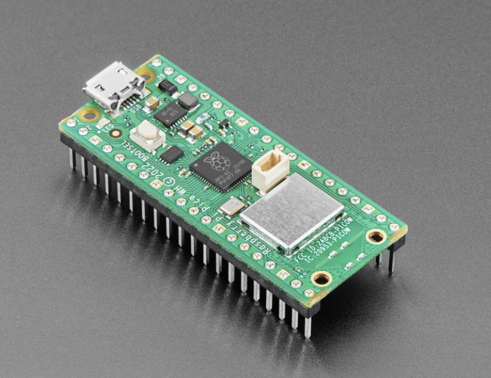
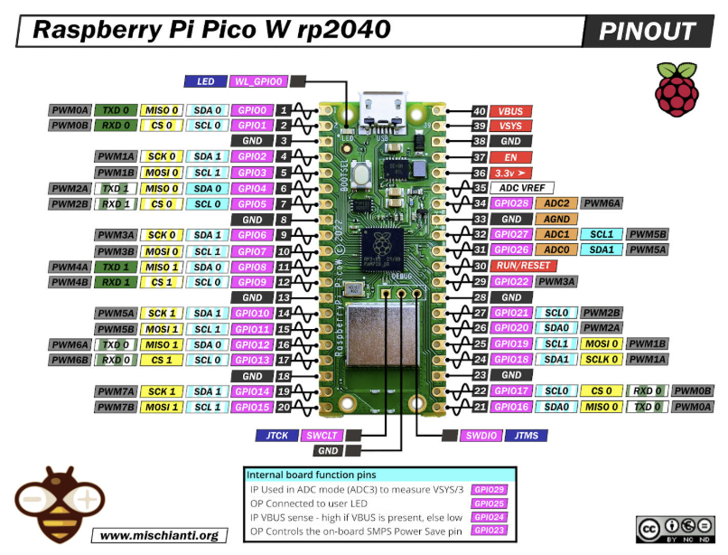

Week 6 (Monday): Raspberry Pi Pico W & CircuitPython Initialization
Objective
To provision a new Raspberry Pi Pico W with the CircuitPython firmware and verify its execution environment by flashing the onboard LED. This marks the transition into wireless-capable embedded hardware.


Hardware Overview: Pico vs. Pico W
While identical in physical footprint to the standard Raspberry Pi Pico, the Pico W includes a major architectural upgrade: the Infineon CYW43439 wireless chip. This addition provides 2.4 GHz Wi-Fi and Bluetooth capabilities, unlocking IoT (Internet of Things) project potential.
Hardware Quirks: Because the wireless chip takes up real estate and pins, the onboard LED on the Pico W is not connected to GP25 like it is on the standard Pico. Instead, it is wired directly to the wireless chip. Fortunately, high-level languages like CircuitPython abstract this hardware routing for us.
The Setup Pipeline: Installing CircuitPython
Microcontrollers don't natively understand Python. To write Python code for the Pico W, we must first install a Python interpreter (CircuitPython) onto the bare metal of the RP2040 chip.
Step 1: BOOTSEL Mode
- Unplug the Pico W from the computer.
-
Press and hold the white BOOTSEL (Boot Select) button on the board.
-
While holding the button, plug the micro-USB cable into the computer.
- Release the button.
Why do this? This forces the RP2040 into USB Mass Storage Mode. The computer will now recognize the microcontroller as a standard USB flash drive named RPI-RP2.
Step 2: Flashing the Firmware (.uf2)
-
Download the specific CircuitPython
.uf2file for the Raspberry Pi Pico W from the official Adafruit website. (Note: You must use the Pico W version, not the standard Pico version, or the wireless features/LED will not work). -
Drag and drop the
.uf2file directly into theRPI-RP2drive. - The board will automatically disconnect, flash its internal memory, and reboot.
- A new drive named
CIRCUITPYwill appear on your computer. The installation is complete.
Firmware Implementation: The Hardware "Hello World"
With CircuitPython installed, any code written in the code.py file located on the CIRCUITPY drive will execute automatically as soon as the board powers on.
Here is the implementation to blink the Pico W's onboard LED:
import board
import digitalio
import time
# Initialize the onboard LED
# Note: CircuitPython handles the complex routing to the wireless chip automatically
led = digitalio.DigitalInOut(board.LED)
led.direction = digitalio.Direction.OUTPUT
print("Starting LED sequence...")
# Infinite execution loop
while True:
led.value = True # Turn LED ON
time.sleep(0.5) # Pause execution for 500 milliseconds
led.value = False # Turn LED OFF
time.sleep(0.5) # Pause execution for 500 milliseconds
Core Concepts Mastered
1. Bootloaders and Firmware Flashing
We bypassed normal operation and interacted directly with the RP2040's bootloader. The .uf2 (USB Flashing Format) is a specific file type designed by Microsoft to make flashing microcontrollers as easy as moving files on a hard drive, removing the need for complex command-line flashing tools.
2. Hardware Abstraction Layers (HAL)
By importing the board module, we relied on CircuitPython's Hardware Abstraction Layer. Instead of writing complex low-level C code to talk to the Infineon wireless chip just to turn on an LED, we simply called board.LED. The interpreter handles the physical memory mapping behind the scenes.
3. The code.py Lifecycle
Unlike C/C++ which requires a manual compilation and linking step every time a change is made, CircuitPython uses an auto-reload feature. The moment you press CTRL+S (Save) on code.py, the Pico W instantly restarts the interpreter and runs the updated code.